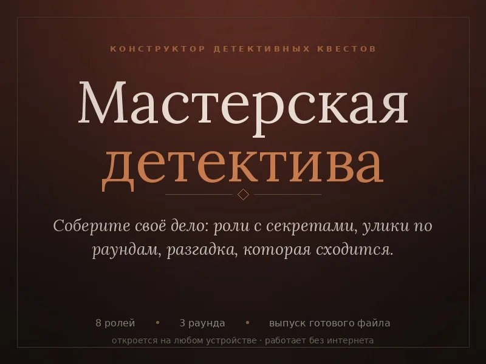

«Мастерская детектива» — конструктор детективного квеста для своей компании
Придумайте своё дело — про коллег, друзей или семью, — а конструктор проследит, чтобы оно сходилось: один виновный, улики указывают на нужных людей, у каждого есть что скрывать.

Свой детектив вместо чужого сценария
Готовый квест хорош один раз. Свой — можно сделать про конкретных людей: про отдел на корпоративе, про именинника, про семью на даче. Гостям смешнее и интереснее, когда в деле узнаются свои.
«Мастерская детектива» — это страница в браузере, где вы шаг за шагом заполняете дело: завязку, подозреваемых, их тайны, улики по раундам и развязку. Проверка подсказывает, где дело разваливается, ещё до того, как гости сели за стол.
Что умеет конструктор
- Проверка дела: ловит двух виновных, пустые карточки, улики «ни о ком» и подозреваемых, которых не упоминает ни одна улика.
- Игра с экрана: роли раздаются по кругу, улики открываются по раундам, в конце — голосование и развязка.
- Готовая игра одним HTML-файлом — можно отдать другому ведущему или распечатать (в полной версии).
- Работает офлайн: дело хранится у вас в браузере, ничего не уходит в интернет.
Что бесплатно, а что по ключу
Бесплатная версия не урезана до бесполезности: четыре подозреваемых, один раунд, четыре улики и игра с экрана. Небольшое дело собирается целиком — можно понять, ваше это или нет, ничего не заплатив.
Ключ за 249 ₽ открывает до восьми подозреваемых, три раунда и до восемнадцати улик, версию для печати, сохранение дела в файл и выпуск готовой игры отдельным файлом. Ключ вводится один раз, интернет для активации не нужен.
Как сделать первое дело
- Откройте конструктор по кнопке ниже. Чтобы пользоваться им без интернета, сохраните страницу (Ctrl+S) и открывайте файл двойным щелчком.
- Заполните завязку: что случилось, где и когда.
- Добавьте подозреваемых: кто они, что скрывают и что знают о других. Отметьте виновного.
- Разложите улики по раундам и откройте вкладку «Проверка» — она покажет, что поправить.
- Запустите игру с экрана или выпустите её файлом для печати.
Частые вопросы
Нужно ли что-то устанавливать?
Нет. Конструктор открывается в любом современном браузере на компьютере или телефоне.
Куда вводить ключ?
На вкладке «Улики» или «Проверка» есть окошко с замком. Ключ вводится один раз, браузер его запоминает.
Не хочу придумывать сам — есть готовые дела?
Сколько человек может играть?
В демо — до четырёх подозреваемых, с ключом — до восьми, плюс ведущий.